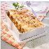
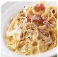

Recetas de pastaLa pasta es uno de los pilares básicos en la alimentación de un deportista. Gracias a su alto valor nutricional aporta muchos carbohidratos de bajo índice glucémico. Ideal para realizar un esfuerzo prolongado y no quedarse sin energía. |
|---|
Arroz negroReceta de Arroz negro Dificultad: baja Cocina: tradicional Vegetariana: sí Celíacos: no Anticáncer: no Autor: IVANRUGARCIA |
Base de pizzaReceta de Base de pizza Dificultad: media Cocina: tradicional Vegetariana: no Celíacos: no Anticáncer: no Autor: Selena |
Canelones caseros

Receta de Canelones caseros Dificultad: media Cocina: tradicional Vegetariana: no Celíacos: no Anticáncer: no Autor: Ivan |
Canelones con setas y gambasReceta de Canelones con setas y gambas Dificultad: baja Cocina: tradicional Vegetariana: no Celíacos: no Anticáncer: no Autor: Rita |
Espaguetis a la carbonara

Receta de Espaguetis a la carbonara Dificultad: baja Cocina: tradicional Vegetariana: no Celíacos: no Anticáncer: no Autor: Selena |